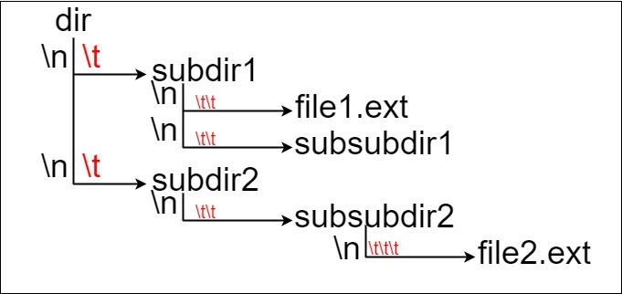
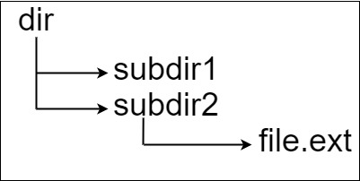
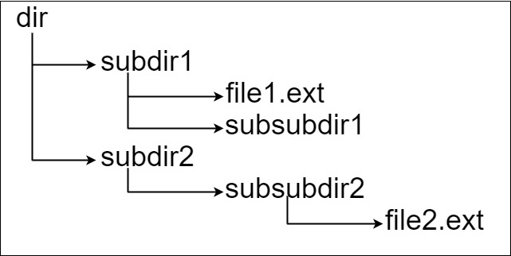

| Category | Difficulty | Likes | Dislikes |
|---|---|---|---|
| Algorithms | Medium | 1377 | 2591 |
google | facebook | amazon | apple
Suppose we have a file system that stores both files and directories. An example of one system is represented in the following picture:

Here, we have dir as the only directory in the root. dir contains two subdirectories, subdir1 and subdir2. subdir1 contains a file file1.ext and subdirectory subsubdir1. subdir2 contains a subdirectory subsubdir2, which contains a file file2.ext.
In text form, it looks like this (with ⟶ representing the tab character):
dir
⟶ subdir1
⟶ ⟶ file1.ext
⟶ ⟶ subsubdir1
⟶ subdir2
⟶ ⟶ subsubdir2
⟶ ⟶ ⟶ file2.extIf we were to write this representation in code, it will look like this: "dir\n\tsubdir1\n\t\tfile1.ext\n\t\tsubsubdir1\n\tsubdir2\n\t\tsubsubdir2\n\t\t\tfile2.ext". Note that the '\n' and '\t' are the new-line and tab characters.
Every file and directory has a unique absolute path in the file system, which is the order of directories that must be opened to reach the file/directory itself, all concatenated by '/'s. Using the above example, the absolute path to file2.ext is "dir/subdir2/subsubdir2/file2.ext". Each directory name consists of letters, digits, and/or spaces. Each file name is of the form name.extension, where name and extension consist of letters, digits, and/or spaces.
Given a string input representing the file system in the explained format, return the length of the longest absolute path to a file in the abstracted file system. If there is no file in the system, return 0.
Note that the testcases are generated such that the file system is valid and no file or directory name has length 0.
Example 1:

Input: input = "dir\n\tsubdir1\n\tsubdir2\n\t\tfile.ext"
Output: 20
Explanation: We have only one file, and the absolute path is "dir/subdir2/file.ext" of length 20.Example 2:

Input: input = "dir\n\tsubdir1\n\t\tfile1.ext\n\t\tsubsubdir1\n\tsubdir2\n\t\tsubsubdir2\n\t\t\tfile2.ext"
Output: 32
Explanation: We have two files:
"dir/subdir1/file1.ext" of length 21
"dir/subdir2/subsubdir2/file2.ext" of length 32.
We return 32 since it is the longest absolute path to a file.Example 3:
Input: input = "a"
Output: 0
Explanation: We do not have any files, just a single directory named "a".
Constraints:
1 <= input.length <= 104input may contain lowercase or uppercase English letters, a new line character '\n', a tab character '\t', a dot '.', a space ' ', and digits.